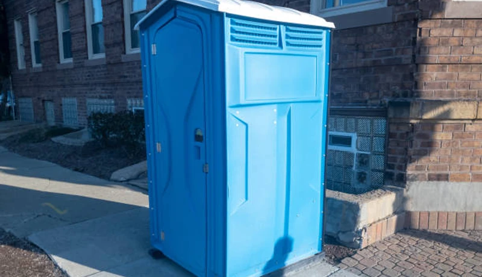

Event Planning
Porta Potty Guide for Beale Street Festivals
Hosting an event in Downtown Memphis? Learn exactly how many portable restrooms you need to keep guests happy during BBQ season.
No forms. No callbacks. Talk to a real dispatcher right now and lock in delivery.
Not sure how many units? Use our free porta potty calculator.
Every Memphis event — from intimate Downtown Memphis weddings to multi-day FedExForum festivals — deserves spotless, reliable restroom facilities. We cover it all: luxury restroom trailers for upscale affairs, standard units for large crowds, and ADA-compliant options ensuring no guest is left out at any venue across Shelby County.

OSHA-certified portable restrooms for Downtown Memphis and Midtown construction in Shelby County. Worker-to-toilet ratio documentation included with every Memphis order. Weekly servicing on your Shelby County job site schedule.

VIP trailers with A/C, granite countertops, and LED lighting for Memphis events near FedExForum. Available with same-day delivery throughout Shelby County and Midtown venues.

Affordable standard porta potties for Shelby County construction crews and Memphis community events. Reliable, clean, on-time — serving Downtown Memphis, Midtown, and Beale Street daily.

ADA-accessible porta potties for Memphis permitted events and Shelby County job sites. Meets ANSI A117.1 accessibility requirements for Beale Street public venues and Downtown Memphis construction.

Fresh-water portable sinks for Shelby County outdoor markets, Memphis catering events, and Beale Street job sites. Self-contained, no hookup required — bundle with porta potties for Memphis.

Flushable porta potties for Memphis events where guest comfort matters near Downtown Memphis and Midtown. Real flush, fresh water, cleaner interior — available same-day throughout Shelby County.

Multi-stall restroom trailers for large Memphis events near FedExForum and Midtown outdoor venues. A/C or heat, multiple stalls, and upscale fixtures for Shelby County festival crowds.

Designed specifically for multi-story commercial developments in Downtown Memphis. These units feature integrated, heavy-duty steel slings allowing your crane operator to safely hoist sanitation directly to elevated floors, saving time and maximizing site efficiency.

Marble countertops, LED lighting, stainless fixtures, and climate control — the gold standard for Memphis galas and FedExForum-area VIP events in Shelby County. Every guest is impressed.

Premium-feel porta potties for Memphis outdoor weddings, Downtown Memphis HOA events, and renovation projects in Shelby County. Lighting, improved airflow, and cleaner aesthetics than standard units.

Septic pump-out and holding tank service for Memphis construction sites in Shelby County. Emergency pumping for Downtown Memphis and Midtown properties — 24/7 availability from our Memphis team.

Same-day emergency rentals for Memphis — available 24/7 for Downtown Memphis, Midtown, and all of Shelby County. Call (833) 652-9344 any time; our Memphis dispatcher answers live and confirms delivery.
Not sure what your site needs? Use this quick comparison guide to find the perfect sanitation solution for your guest count and event type.
| Unit Type | Best For | Key Features | Capacity (Approx) |
|---|---|---|---|
| Standard Porta Potty | Construction, Casual Events, Parks | Ventilated, Urinal, Hand Sanitizer | 1 per 10 workers / 50 guests |
| Flushable VIP Unit | Corporate Picnics, Backyards | Foot-pump flush, Hidden Waste, Sink | 1 per 40 guests |
| ADA Compliant Unit | Public Festivals, Code Compliance | Ground level access, Grab bars, Oversized | Required 1 per 20 std. units |
| Luxury Trailer (2-10 Stalls) | Weddings, VIP Areas, Film Sets | A/C, Running Water, Porcelain Toilets, Lights | 150 - 800+ guests |
OSHA-certified portable restrooms for Downtown Memphis and Midtown construction in Shelby County. Worker-to-toilet ratio documentation included with every Memphis order. Weekly servicing on your Shelby County job site schedule.
Call for Expert Sizing →Navigating Shelby County regulations is critical to avoid fines and project delays. Our logistics team handles the placement strategy to keep your site 100% legal.

We believe in transparent, upfront pricing with zero hidden fees. While exact costs fluctuate based on inventory and season, your rental price in Shelby County is determined by three main factors:
A standard event unit is our most affordable option, while multi-stall luxury AC trailers command a premium. Bulk orders for large sites receive scaled pricing.
Event units are typically billed on a flat weekend rate. Construction rentals in Memphis are billed on a recurring 28-day cycle.
One cleaning per week is standard. For high-traffic sites where adding more units isn't physically possible, we can schedule twice-weekly or daily pumping.
Want an exact number for your project?
Call our local dispatchers. It takes less than 2 minutes to get a binding quote.
Call →
The Mid-South event season brings heavy demand. Here is our recommended timeline to secure inventory during peak months.
March - May. Book 4-6 weeks in advance. This is peak BBQ and festival season in Memphis. Luxury trailers sell out fast.
June - August. Book 1-2 weeks in advance. Event inventory is open, but commercial construction rentals are heavily requested.
Sept - Nov. Book 2-3 weeks in advance. Weather cools down and outdoor weddings and local marathons ramp up.
The biggest fear of renting a porta potty is the mess and the smell, especially in the Mid-South heat. We eliminate that completely. Our Memphis technicians follow a strict 4-point protocol.
Using high-powered vacuum trucks, we completely pump out all waste and transport it to approved Shelby County wastewater facilities.
All interior surfaces—walls, floors, urinals, and seats—are cleared of debris and vigorously scrubbed to remove dirt and grime.
We apply industrial-grade disinfectants. We then recharge the tank with a specialized blue deodorizing solution engineered to withstand Memphis summers.
We fully replenish all consumables, including high-capacity 2-ply toilet paper rolls and hand sanitizer dispensers, ensuring the unit is ready for use.
Memphis is a dynamic Shelby County community where construction activity, outdoor events, and residential growth create year-round demand for reliable portable sanitation. From the corridors near FedExForum to the neighborhoods of Downtown Memphis, Midtown, and Beale Street, every part of Shelby County has a reason to call FixPilot — construction sites, events, or emergency backup near Graceland.
Our Memphis depot enables rapid same-day delivery to Downtown Memphis and all of Shelby County.
Construction and event delivery to Midtown — same-day available throughout Shelby County.
Serving Beale Street residential and commercial projects with OSHA-certified units.
Luxury restroom trailers and standard units for events and construction in East Memphis.
Same-day delivery to Germantown and all surrounding Shelby County communities.
Serving contractors and event planners in Bartlett and throughout Shelby County.
Reliable porta potty service to Collierville, Downtown Memphis, and all of Shelby County.
We also provide fast, reliable service to contractors and residents in these nearby Shelby County communities:
*Prices may vary by duration and location in Shelby County. Call for exact quote.
Get Your Free Memphis Quote2026 Rental Cost Guide
Standard, deluxe & luxury pricing explained
How Many Units Do You Need?
Calculate the right number for your event or site
OSHA Compliance Guide
Requirements for construction sites
Construction Site Services
OSHA-compliant units for job sites
Luxury Restroom Trailers
VIP-grade trailers for weddings & events
Free Quote Calculator
Get an instant estimate in 60 seconds
Memphis's Shelby County portable sanitation market spans construction corridors, event venues, and a residential base that keeps our Memphis fleet active year-round. The Downtown Memphis and Midtown zones carry the heaviest construction load — commercial mixed-use developments, residential subdivisions extending into Beale Street and East Memphis, and infrastructure projects throughout Shelby County. FixPilot serves Shelby County construction job sites with OSHA-certified units delivered on schedule to every active project.
The event circuit near Graceland and throughout Shelby County generates premium sanitation demand from Memphis's outdoor wedding market, corporate event producers, and public festival organizers. Venues in Downtown Memphis, private estates in Midtown, and outdoor spaces near FedExForum book luxury restroom trailers as standard equipment — facilities that match Memphis's growing expectation for event-quality restrooms. Our Shelby County luxury trailer inventory is sized for Memphis's event volume, not just the peak weekends.
Beale Street, East Memphis, and Germantown contribute the residential layer beneath Memphis's commercial and event markets. Homeowners in these Shelby County neighborhoods managing renovations, contractors building new Memphis subdivisions, and small event organizers running community gatherings near Graceland make up the steady background demand. FixPilot's Memphis depot is sized for this full spectrum — same-day delivery to Downtown Memphis construction, weekend luxury trailer service at Midtown weddings, and weekday residential rentals in East Memphis and Germantown.
Memphis's Shelby County construction market is anchored by FedEx's global hub expansion at Memphis International Airport — the world's largest cargo airport by tonnage — which drives continuous warehouse and distribution construction throughout Shelby County's I-240 and I-40 corridors. The Crosstown Concourse adaptive reuse of the 1.5 million square foot Sears Tower in the Crosstown neighborhood has catalyzed mixed-use development throughout Midtown Memphis. Memphis Medical District's innovation corridor at the University of Tennessee Health Science Center, Methodist Le Bonheur Healthcare's system-wide campus expansion, and St. Jude Children's Research Hospital's $11.5 billion expansion program on its downtown campus keep healthcare construction contractors active year-round in Shelby County. EDGE Industrial Park's Amazon and Nike distribution center expansions in Bartlett and Millington add industrial construction volume. FixPilot serves Shelby County construction with same-day delivery and Tennessee OSHA documentation from Downtown Memphis to Germantown.
Memphis's event market is defined by its cultural significance as the birthplace of the blues, rock and roll, and soul music. Beale Street Music Festival in Tom Lee Park draws 100,000 fans over three days in May, opening the Memphis in May International Festival that continues with the World Championship Barbecue Cooking Contest — the world's largest barbecue competition — drawing 100,000 additional visitors to the riverfront. The Great Outdoors Memphis outdoor concert series at Shelby Farms Park, Memphis Marathon through Cooper-Young and Midtown neighborhoods, and Memphis Pride in Overton Park add consistent seasonal event demand. Graceland's Elvis Week in August draws 50,000 Elvis fans to Whitehaven. AutoZone Park's Memphis Redbirds games and FedExForum concerts add year-round event sanitation demand throughout Shelby County.
Shelby County contractors and event planners choose FixPilot because Memphis's unique construction and event environment demands local expertise. We understand that St. Jude campus construction deliveries require St. Jude's vendor credentialing and infection control protocols, that Memphis in May Riverfront events require Memphis Park Commission and Shelby County Health Department coordination, and that FedEx MEM airport deliveries require Memphis-Shelby County Airport Authority vehicle access credentials. Our Memphis metro team serves all Shelby County communities from Germantown to Bartlett to the Frayser neighborhood with same-day delivery.
Crucial guides for event planning, logistics, and construction compliance in Shelby County.
Hosting an event in Downtown Memphis? Learn exactly how many portable restrooms you need to keep guests happy during BBQ season.

Keep your Memphis construction site safe. We break down the exact protocols for securing porta potties against heavy storms.

Planning an elegant outdoor wedding? See why climate-controlled luxury trailers provide the ultimate comfort and save guests from walking.

Avoid fines on your commercial build. Learn exactly what OSHA demands for handwashing stations and sanitation capacity in TN.
Porta Potty Rental in Clarksville
Learn More →Porta Potty Rental in Murfreesboro
Learn More →Real feedback from contractors, event planners, and homeowners across Shelby County.
"We use them for all our residential renovations in East Memphis. They are incredibly careful placing the units so they don't damage the driveways, and they always show up for the weekly cleaning."
David W.
General Contractor
"Rented a VIP restroom trailer for a corporate event near Harbor Town. The interior was gorgeous, and the AC blasted perfectly even in the Mid-South humidity. Very professional team."
Ashley M.
Corporate Planner
"Fast delivery for a festival down in Whitehaven. Units were completely spotless and smelled fresh. Will definitely use Memphis Sanitation Solutions again next year."
Marcus J.
Festival Organizer
Real answers for Memphis customers. More questions? Call (833) 652-9344 anytime.
Our Memphis-based fleet delivers same-day to Downtown Memphis, Midtown, Beale Street, and all of Shelby County. Most Memphis orders placed before noon arrive by early afternoon. For construction site emergencies near FedExForum or last-minute event needs in East Memphis, our Shelby County dispatch at (833) 652-9344 confirms a delivery window within minutes — 24/7.
Yes — every Memphis neighborhood is on our regular delivery route: Downtown Memphis, Midtown, Beale Street, East Memphis, Germantown, and all communities in between across Shelby County. We've never declined a Memphis-area order for location. Call (833) 652-9344 with your Shelby County address and we'll confirm same-day availability.
Yes — every unit placed at a Shelby County construction site is certified to OSHA 29 CFR 1926.51. We include a compliance documentation package with every Memphis construction order: worker-to-toilet ratios for your crew size, service frequency records, and positioning requirements for Downtown Memphis and Midtown job sites. Eight consecutive years of OSHA audits for Shelby County contractors, zero violations.
In Shelby County, standard porta potties run $75–100/day with weekly service. Upgraded deluxe units are $100–150/day. ADA-compliant units for Memphis public events cost $120–160/day. Luxury restroom trailers for events near FedExForum or Graceland start at $400/day. Multi-week Shelby County construction contracts qualify for volume discounts. Call (833) 652-9344 for a precise Memphis project quote.
We're locally operated in Shelby County — not a franchise dispatching from 500 miles away. Our inventory is staged in the Memphis metro for genuine same-day delivery to Downtown Memphis, Midtown, Beale Street, and all of Shelby County. Every unit is professionally cleaned. When you call (833) 652-9344 about a East Memphis job site or FedExForum-area event, you reach someone who knows Memphis.
Yes — outdoor wedding venues throughout Shelby County, including venues in Downtown Memphis, Midtown, Beale Street, and private properties near FedExForum, are a significant part of our Memphis event business. Luxury restroom trailers for Shelby County weddings include delivery, leveling on uneven terrain, utility connection, daily service, and post-event removal — handled entirely by our Memphis team.
For events at Graceland in Memphis, our luxury restroom trailers are the preferred choice for events over 100 guests — climate control, flushing toilets, and premium finishes that don't undercut your Shelby County venue's aesthetic. For smaller Graceland-area gatherings under 75 guests, deluxe porta potties with interior lighting and better ventilation are a cost-effective option.
Yes — luxury trailers with climate control, flushing toilets, granite countertops, and LED lighting are available for weddings near FedExForum, private estate events in Downtown Memphis and Midtown, and outdoor galas throughout Shelby County. Our Memphis event fleet serves every venue type from rooftop events downtown to rustic barn weddings in East Memphis and Germantown.
For a 300-person outdoor event running 5 hours near Graceland in Shelby County, plan for 6 standard units or 2 luxury trailers plus 2 hand wash stations. Add 30% if alcohol is served. For events at Downtown Memphis and Midtown venues throughout Memphis, call (833) 652-9344 with your headcount and duration for a precise count — we've sized Shelby County events from 50 to 50,000 attendees.
Yes — multi-day Memphis festivals near Graceland and throughout Shelby County get dedicated daily service. Our crew arrives before gates open, services all units, restocks supplies, and logs service documentation. For large Downtown Memphis and Beale Street venue events where truck access is limited, we use compact service vehicles that navigate Shelby County event site restrictions without disrupting programming.
Yes — projects and events near FedExForum are among our most regular Shelby County deliveries. Our Memphis drivers know the delivery windows, vehicle access requirements, and site coordination protocols for the FedExForum area. Same-day delivery is standard for Shelby County locations near FedExForum across Downtown Memphis and Midtown. Call (833) 652-9344 for immediate availability confirmation.
Graceland and the surrounding Beale Street corridor are a regular part of our Memphis service calendar. We've provided construction porta potties and luxury restroom trailers for events ranging from small private gatherings to large public events near Graceland in Shelby County. Delivery timing, access coordination, and permit guidance for Graceland-area projects are handled by our Memphis team.
Our Memphis emergency line (833) 652-9344 is answered live 24/7 — including nights, weekends, and holidays. Our Shelby County on-call driver covers Downtown Memphis, Midtown, Beale Street, and the full Memphis metro for after-hours emergencies. Whether it's a FedExForum-area construction inspection failure or a last-minute event backup in East Memphis, we dispatch immediately with no premium for after-hours service.